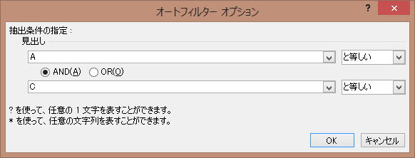
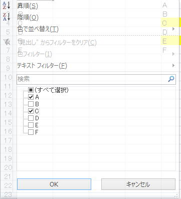

複雑な条件（複数除外等）のオートフィルター（AutoFilter）
オートフィルターはExcelにおいて重要かつ便利な機能ですが、その使い方の理解が不十分な事が多いようです、
単純な条件の場合は問題ないのですが、条件が複雑になった途端に書き方で相談を受ける事が多々あります。
上記ページで、オートフィルターについては概ね解説しています。
しかし、より複雑な条件指定になると、どうにもならない場合があります。
リストとして、
"A","B","C","D","E","F"
があるとして、
"A","C"で絞り込む場合、
Rangeオブジェクト.AutoFilter Field:=1, Criteria1:="=A", Operator:=xlOr, Criteria2:="=C"
テキストフィルター→ユーザー定義フィルターの以下に相当します。

Rangeオブジェクト.AutoFilter Field:=1, Criteria1:=Array("A", "C"), Operator:=xlFilterValues

どうしたらよいでしょうか。
Rangeオブジェクト.AutoFilter Field:=1, Criteria1:="<>A", Operator:=xlAnd, Criteria2:="<>C"
= → <>
Or → And
ここは把握しておいてください。
・・・
無理ですよね、画面でもそんな指定はありませんからね。
書くとしてら、
もっとも、画面の場合は全てチェックが付いている状態から、除外するもののチェックを外すという操作になるでしょうけど。
しかし、VBAの場合はどうしようもありません。
Arrayの中に絞り込む全てのリストをいれるしかないのです。
どうしたらよいでしょうか。
・・・
これはもう無理なんです。
フィルターオプションの画面を再度良く見てください。
3つも指定ができないのです。
そのような機能は無いのですからあきらめてください。
実は、これが出来ないと相談されることが非常に多いのです・・・
でも無理なんです。
Rangeオブジェクト.AutoFilter Field:=1, Criteria1:=Array("B", "D", "F"), Operator:=xlFilterValues
しかし、その、
"B","D","F"
これをどうやって生成するのでしょうか。
シートのリストからユニーク（一意）なデータを作らなければなりません。
もちろんその方法はあります。
例えば、
ExcelマクロVBA入門：第90回.フィルタオプションの設定（AdvancedFilter）
もちろん、
"A","C","E"
を残して、
"B","D","F"
を削除したいというのなら、
"A","C","E"
で絞り込んで、別シートにコピーするという手が簡単です。
その都度、指定方法に悩まされていたのでは生産性が悪いです。
もっと汎用的なな方法を考えましょう。
ズバリ、作業列を追加してください。
最終列の横に作業列を追加し、
条件判定して、「対象」「対象外」等の文字を入れて下さい。
そうすれば、単純なオートフィルターで処理が可能です。
この判定文字の出力に時間がかかるのではと思われるかもしれませんが、
Range("B2:B100000").Value = "=IF(OR(A2=""A"",A2=""C"",A2=""E""),""対象"",""対象外"")"
Range("B2:B100000").Value = Range("B2:B100000").Value
一応、式を抜いて値だけにするところまでやっていますが、
これでも1秒かかりません。（テスト機はCorei5）
ちなみに、処理速度に関しては、
エクセルVBAのパフォーマンス・処理速度に関するレポート
やり方はいろいろありますが、なるべく単純化するようにして下さい。
特に作業列の活用は常に念頭においておくようにしてください。
私も受託開発で書く場合は、あまり作業列は使わずに処理します。
まあ、大抵は配列で全て処理するようにしていますね。
配列に関しては、等サイト内のあちこちで記載していますので興味があれば参考にしてください。
第111回.静的配列
同じテーマ「マクロVBA技術解説」の記事
シートに数式を設定する時のセル参照の指定方法
標準モジュールとシートモジュールの違い
オートフィルタ（AutoFilter）の使い方まとめ
複雑な条件（複数除外等）のオートフィルター（AutoFilter）
クリップボードを使わないセルのCopy
Rangeの使い方：最終行まで選択を例に
フルパスをディレクトリ、ファイル名、拡張子に分ける
Colorプロパティの設定値一覧（カラー定数、XlRgbColor列挙）
VBAを定型文で覚えよう
VBAこれだけは覚えておきたい必須基本例文10
エクセルVBAでのシート指定方法
新着記事NEW ・・・新着記事一覧を見る
VBA100本ノック 100本目：WEBから100本ノックのリストを取得｜VBA練習問題（3月3日）
VBA100本ノック 99本目：自動席替え（行列と前後左右が全て違うように）｜VBA練習問題（3月2日）
VBA100本ノック 98本目：席替えルールが守られているか確認｜VBA練習問題（3月1日）
VBA100本ノック 97本目：Accessデータを取得（グループ集計）｜VBA練習問題（2月27日）
VBA100本ノック 96本目：Accessデータを取得（マスタ結合&抽出）｜VBA練習問題（2月26日）
VBA100本ノック 95本目：図形のテキストを検索するフォーム作成｜VBA練習問題（2月24日）
VBA100本ノック 94本目：表範囲からHTMLのtableタグを作成｜VBA練習問題（2月23日）
VBA100本ノック 93本目：複数ブックを連結して再分割｜VBA練習問題（2月22日）
VBA100本ノック 92本目：セルの色を16進で返す関数｜VBA練習問題（2月20日）
VBA100本ノック 91本目：時間計算（残業時間の月間合計）｜VBA練習問題（2月19日）
アクセスランキング ・・・ ランキング一覧を見る
1.最終行の取得（End,Rows.Count）｜VBA入門
2.RangeとCellsの使い方｜VBA入門
3.変数宣言のDimとデータ型｜VBA入門
4.マクロって何？VBAって何？｜VBA入門
5.Range以外の指定方法（Cells,Rows,Columns）｜VBA入門
6.セルのコピー&値の貼り付け（PasteSpecial）｜VBA入門
7.繰り返し処理（For Next)｜VBA入門
8.セルに文字を入れるとは（Range,Value）｜VBA入門
9.マクロはどこに書くの（VBEの起動）｜VBA入門
10.とにかく書いてみよう（Sub,End Sub）｜VBA入門
- ホーム
- マクロVBA応用編
- マクロVBA技術解説
- 複雑な条件（複数除外等）のオートフィルター（AutoFilter）
このサイトがお役に立ちましたら「シェア」「Bookmark」をお願いいたします。
記述には細心の注意をしたつもりですが、
間違いやご指摘がありましたら、「お問い合わせ」からお知らせいただけると幸いです。
掲載のVBAコードは動作を保証するものではなく、あくまでVBA学習のサンプルとして掲載しています。
掲載のVBAコードは自己責任でご使用ください。万一データ破損等の損害が発生しても責任は負いません。